事前にご準備いただくもの
Zoomサポートをスムーズに進めるため、開始までに下記をご用意ください。 パスワードやカード情報は一切お伺いしません。
「教えてください」と言われた場合は当社を装った第三者の可能性があります。即時にサポート窓口までご連絡ください。
テンプレートのスプレッドシートをコピー
下のボタンをクリックすると、Googleスプレッドシートのコピー作成ダイアログが開きます。 「コピーを作成」を押せば、ご自身のドライブにテンプレが複製されます。
- ボタンをクリック → Googleスプレッドシートのコピー作成ダイアログが表示
- 「コピーを作成」をクリック → 自分のドライブに自動コピー
- シート上部に「スレッズスケジューラー」メニューが表示されることを確認
初回セットアップで5項目を入力
メニュー 🔧 初回セットアップ を実行すると、5つの値を順番に聞かれます。
この手順書では、1項目ずつ取得 → その場で入力 していきます。空欄でOKを押せば既存値は保持されます。
| キー名 | 取得場所 | 形式 |
|---|---|---|
| THREADS_APP_ID | Step 4 — Meta Developer アプリ作成 | 数字(例: 1644…) |
| THREADS_APP_SECRET | Step 4 — 「表示」で取得 | 英数字 |
| THREADS_ACCESS_TOKEN | Step 5 — 長期トークン | THAA…(150〜200文字) |
| THREADS_USER_ID | Step 6 — User ID取得 | 17桁前後の数字 |
| DISCORD_WEBHOOK_URL | Step 7 — Discord Webhook | https://discord.com/api/webhooks/… |
🔧 初回セットアップ を再実行して、該当項目だけ入力すればOK。
他の項目は空欄のままOKを押せば、既存値はそのまま保持されます。
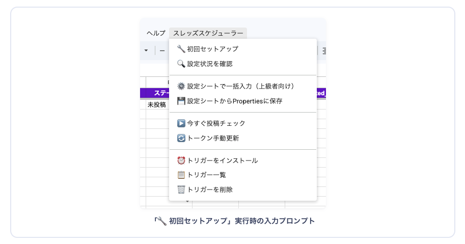
Meta Developer アプリ作成
→ APP_ID / SECRET取得
4-1Meta Developer登録
- developers.facebook.com にFacebookアカウントでログイン
- 電話番号認証(SMS) + 開発者規約に同意
- iPhone Safari: リンクを 長押し → 「新規タブで開く」を選択（タップで同タブ遷移すれば一番安全）
- Discord等のアプリ内ブラウザから開いている場合: 「Safariで開く」を選んで標準ブラウザに切り替える
- キャッシュ・Cookie・拡張機能が原因なら シークレットモード で開き直す
Chrome: Cmd+Shift+N / Edge: Ctrl+Shift+N / Safari: Cmd+Shift+N / Firefox: Cmd+Shift+P - それでもダメなら URL を コピペで直接アドレスバーに貼り付け:
https://developers.facebook.com
4-2アプリ作成
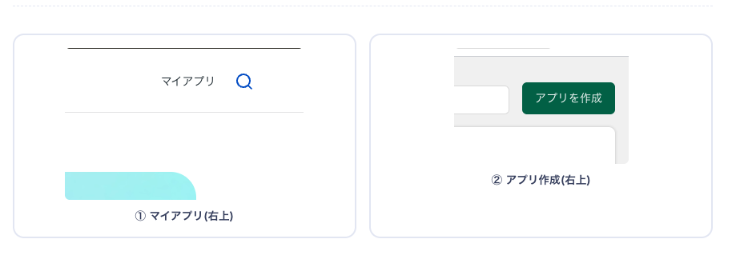
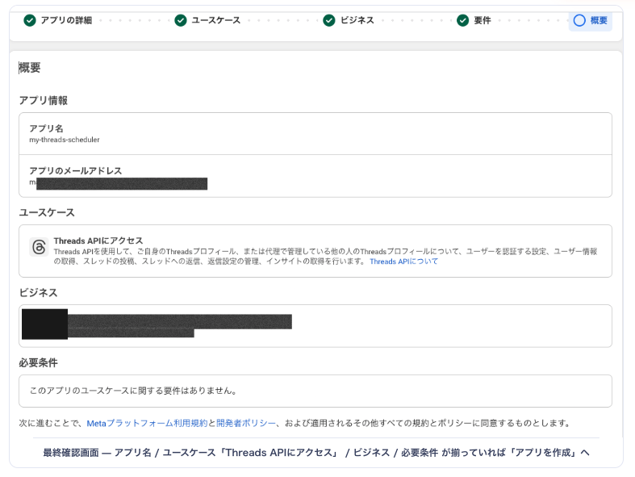
- 右上 マイアプリ → アプリを作成
- アプリ名は任意(例:
my-threads-scheduler) (名前をタップするとコピーできます) - ユースケースで 「Threads APIにアクセス」 を選択
- リンクする Instagramのアカウント を選択する
- 「公開の要件」は空白でOK
- 内容を確認して、よければ 「アプリを作成」 をタップ

4-3ユースケースのカスタマイズ・権限追加
アプリ作成直後は権限が空です。threads_basic と threads_content_publish を追加し、それぞれ 「テスト準備完了」 ステータスに切り替えます。
- マイアプリ の「管理者アプリ」から、作成したアプリをクリック
- ダッシュボードの 「Threads APIへのアクセス」 → カスタマイズ をクリック
threads_basicとthreads_content_publishを 「+ 追加」 ボタンで追加し、それぞれの ステータスを「テスト準備完了」 に切り替える※my-threads-schedulerは初期設定で「アクション」になっています
4-4アプリの基本設定
- • 表示名: なんでもOK
- • プライバシーポリシーURL:
https://tamagoojiji.github.io/bridgesquare-legal/privacy-policy.html - • 利用規約URL:
https://tamagoojiji.github.io/bridgesquare-legal/terms-of-service.html - • ユーザーデータの削除 — データの削除手順URL:
https://tamagoojiji.github.io/bridgesquare-legal/data-deletion.html - • カテゴリ: ビジネス・ページ
- • 「変更を保存」 で保存する
-
• コールバックURLをリダイレクト:
https://www.google.com/※ URLをコピペ後に 青背景のURL が出てくるのでそれをクリック ➡️ グレーで囲われたURL になる - • アンインストールコールバックURL:
https://www.google.com/ - • 削除コールバックURL:
https://www.google.com/ - • 「保存する」をクリック
4-5APP_ID と APP_SECRET を取得 ➡️ スプシに登録 (1個ずつ実施)
- (左側の)ユースケース ➡️ カスタマイズ ➡️ 設定 を開く
- ThreadsアプリID をコピー
-
スプレッドシートのメニュー
スレッズスケジューラー➡️🔧 初回セットアップを実行※ 初回の時のみ「認証が必要になります」- 「このアプリはGoogleで確認されていません」 と出るが、左下の 「詳細」 をクリック
- 「スレッズスケジューラー(安全ではないページ)に移動」 をクリック
- 「アクセスできる情報を選択してください」 で 「全てを選択」 にチェックを入れて進める
💡 「スクリプト起動しています」から動かない場合 はリロードしてからもう一度実行してください。 - THREADS_APP_ID を貼り付け
- 「Threadsのapp secret」を表示 してコピー (Facebookのパスワード入力)
- スプレッドシートの THREADS_APP_SECRET を入力
- 残りはひとまず 空欄でOKを押してスキップ
- 完了画面で 2項目「✅ 設定済」 表示を確認
Threads長期トークン取得 → ACCESS_TOKEN
5-1ユーザートークン生成ツールを開く
ユースケース → Threads APIにアクセス → カスタマイズ → 設定 と進み、 ページ下部にスクロールすると 「ユーザートークン生成ツール」 があります。
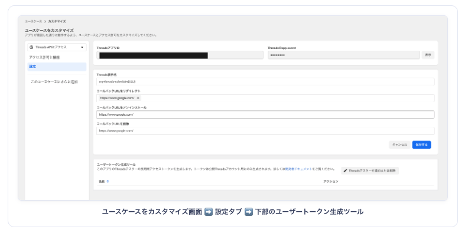
5-2Threadsテスター追加または削除 + 承認
-
「Threadsテスターを追加または削除」 から自分のThreadsアカウントを追加
- 「メンバーを追加」 を選択
- ➡️ 「Threadsテスター」 を選択
- ➡️ 一番下にアカウント名を入れて選択する
- ➡️ 「追加」 をクリック
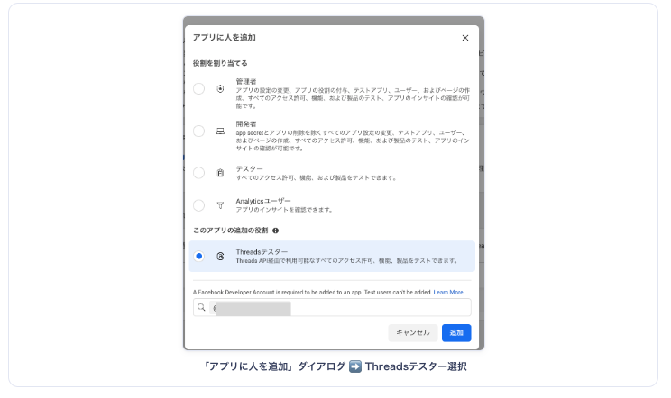
「アプリに人を追加」ダイアログ ➡️ Threadsテスター選択 -
Threadsで招待を承認する
「Threadsユーザーは、プロフィールのウェブサイトのアクセス許可セクションから招待を管理できます」の ウェブサイトのアクセス許可 をタップし、Threadsへ移動
- ➡️ ウェブサイトのアクセス許可
- ➡️ 「招待」
- ➡️ 同意する
- ➡️ MetaのDeveloperのサイトに戻ってリロード
- ➡️ ステータスの 「承認待ち」が消えている ことを確認する

Threadsテスター行に表示される「ウェブサイトのアクセス許可」リンク 
Threadsアプリ ➡️ アカウント ➡️ ウェブサイトのアクセス許可 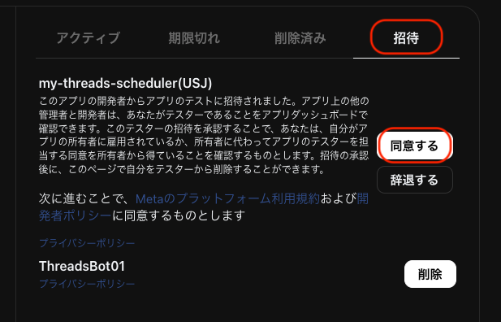
招待タブ ➡️ 「同意する」をタップ 
Metaに戻ってリロード ➡️ ステータスの「承認待ち」が消えていればOK
5-3長期アクセストークンを生成
- ユーザートークン生成ツールに戻る → ページ再読み込み
(ユースケース ➡️ カスタマイズ ➡️ 設定 ➡️ 一番下)
- 承認済アカウントの右側 「アクセストークンを生成」 → 「許可」
- 表示されたトークン(60日有効)を コピーボタンで取得
- メニュー右端の
スレッズスケジューラー➡️🔧 初回セットアップを実行 - THREADS_ACCESS_TOKEN トークンを貼り付け
- 他の項目は 空欄でOK押下してスキップ
⚠ 長期トークンは次の Step でも使用します(再度コピーする必要はありません)。
⚠ 万が一トークンを再生成した場合は、スプレッドシートの「🔧 初回セットアップ」も新しい値に更新してください。
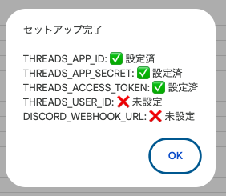
この時点では
THREADS_USER_ID と DISCORD_WEBHOOK_URL は未設定でOK(Step 6・7で取得)
Threads User ID取得 → USER_ID
長期トークンを貼るとURLが生成されます。「ブラウザで開く」を押すと、トークン入りURLが Meta API (graph.threads.net) に直接送信され、JSON 表示画面が開きます。
🔒 このページや localStorage には保存されません。「ブラウザで開く」を押した時のみ Meta API に送信されます(ブラウザ履歴に残る点に注意)。
開くと、ブラウザに以下のようなJSONが表示されます:
{"id":"35107700672178457"}
idの値(数字) が THREADS_USER_ID です(17桁前後)。
- メニュー右端の
スレッズスケジューラー➡️🔧 初回セットアップを実行 - THREADS_USER_ID 数字(17桁前後)を入力
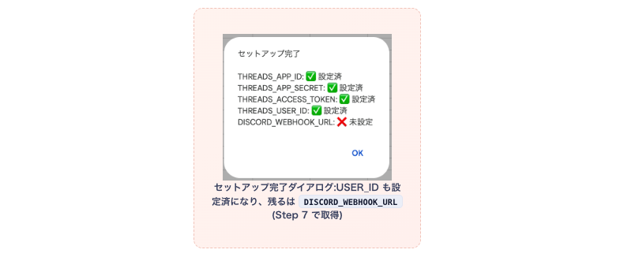
DISCORD_WEBHOOK_URL(Step 7 で取得)Discord Webhook作成 → WEBHOOK_URL
7-1開発者モードを有効化
- Discordアプリもしくはブラウザ版を開く
- 左下の ユーザー設定(歯車アイコン)
- 左メニュー一番下の <> 開発者
- 開発者モード を ON
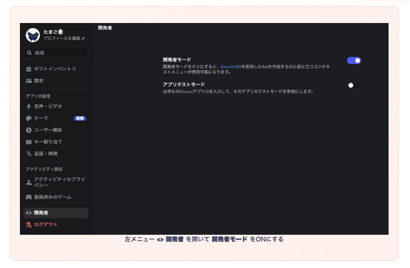
7-2通知用チャンネル作成
- 既存サーバー or 新規サーバーで 「チャンネルを作成」
- テキストチャンネル を選択 / 名前は
threads-scheduler等 (名前をタップするとコピーできます)
7-3Webhook URLを取得
- チャンネル名右の 歯車 → 連携サービス → ウェブフック → 新しいウェブフック
- 名前を設定(例:
Threads Scheduler) (名前をタップするとコピーできます) - 「ウェブフックURLをコピー」 をクリック
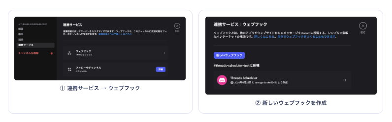
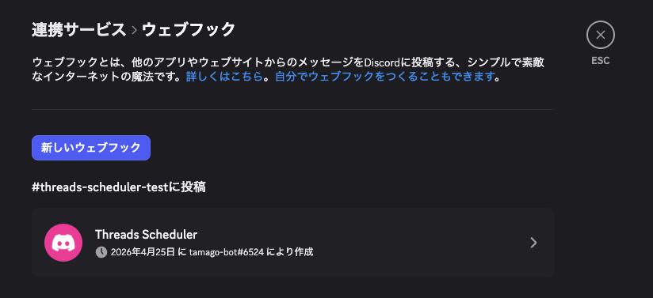
https://discord.com/api/webhooks/... で始まっていればOK。
- メニュー右端の
スレッズスケジューラー➡️🔧 初回セットアップを実行 - DISCORD_WEBHOOK_URL URLを入力
- これで5項目すべて入力完了 → 完了画面で全項目「✅ 設定済」確認
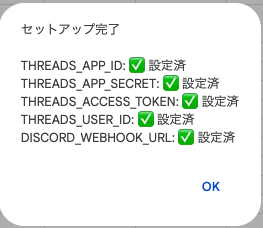
テスト投稿で動作確認 → トリガーをインストール
8-1設定状況の最終確認
メニュー「スレッズスケジューラー」の 🔍 設定状況を確認 を実行 → 5項目すべてが「✅ 設定済」 になっていることを確認。
8-2テスト投稿
- 「投稿予約」シートに新規行を追加:
- 📅 A列(日付): 今日の日付
- 🕒 B列(時刻): 1〜2分前の時刻(例: 14:30)
- 📝 C列(投稿本文): 「テスト投稿」など
- 🏷 E列(ステータス): 「未投稿」(プルダウンで選択)
- M列に投稿日時が自動表示されることを確認
- メニュー「スレッズスケジューラー」の
▶️ 今すぐ投稿チェックを実行 - 数秒後に Threadsへ投稿が反映 されることを確認
- E列が「投稿済」 に変わることを確認
- Discordに「✅ 投稿成功」通知 が届くことを確認
8-3トリガーをインストール(自動運用開始)
メニュー ⏰ トリガーをインストール → 完了ダイアログ
以降、10分ごと自動チェック + 週1回トークン自動更新 が動き続けます。操作不要。
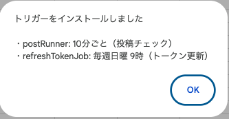
・10分ごとの投稿チェック
・週1回のトークン更新 が登録されます
セットアップ完了後の運用
- 新規予約投稿: 「投稿予約」シートに
A=日付/B=時刻/C=本文/E=未投稿を入れるだけ - 状態確認: E列ステータス + Discord通知
- トークン更新: 毎週日曜9時に自動実行(手動操作不要)
🛟トラブル時のセルフチェック
「投稿が飛ばない」「Discordにエラーが来た」など、何かおかしいと感じたら、下の 2つのメニュー を順番に確認してください。原因の 9割はこのどちらか で特定できます。
🔍 設定状況を確認
スプシ上部メニュー「スレッズスケジューラー → 🔍 設定状況を確認」をクリック。下のように5項目が表示されます。
THREADS_APP_ID: ✅ 1234...5678 THREADS_APP_SECRET: ✅ abcd...wxyz THREADS_ACCESS_TOKEN: ✅ THAA...XYZ9 THREADS_USER_ID: ✅ 3510...8457 DISCORD_WEBHOOK_URL: ✅ http...zzzz
- 全部 ✅ なのに投稿が飛ばない → ②のトリガー一覧へ
- どれか ❌ 未設定 →
🔧 初回セットアップをもう一度実行してその項目だけ入力 - THREADS_ACCESS_TOKEN が ❌(または60日以上更新されていない疑い)→ メニュー
🔄 トークン手動更新を実行
📋 トリガー一覧
スプシ上部メニュー「スレッズスケジューラー → 📋 トリガー一覧」をクリック。正常な状態は 以下の2件 です。
現在のトリガー: 2件 ・postRunner (id=...) ・refreshTokenJob (id=...)
- 2件揃っている → 自動投稿は正常稼働中。投稿が飛ばない場合はスプシのE列ステータス(「投稿済」「失敗」「未投稿」)を確認
- 0件 / 1件しかない → メニュー
⏰ トリガーをインストールを再実行 - 同じ関数名が3件以上ある → メニュー
🗑 トリガーを削除→⏰ トリガーをインストールでリセット
画像つき投稿を使う
画像を添付したThreads投稿を予約する場合に使います。テキストだけでよい場合は不要です。 画像はあなた自身のGoogle Driveに保存され、tamago側のサーバーには一切残りません。事前設定は何もいりません。
📦仕組み
- スプシのメニュー
📷 画像をアップロードをクリック - ダイアログで画像ファイルを選ぶ(ドラッグ&ドロップでもOK)
- あなたのDriveの 「スレッズ画像」フォルダ(自動作成)に保存
- 公開URLが「画像URL」列のセルに自動入力
- 投稿時刻になるとThreads APIが上記URLから画像を取得して投稿
①使い方A: メニューからアップロード
- 「投稿予約」シートの 「画像URL」列のセル をクリックして選択
- メニュー
スレッズスケジューラー → 📷 画像をアップロード - ダイアログに画像をドラッグ or クリックで選択 →
アップロード - 選択中のセルにURLが自動入力されたら完了
- あとは通常通り、日付・時刻・本文・ステータスを埋めるだけ
②使い方B: セル内画像をURL化
「画像URL」列のセルに画像を直接ドラッグ&ドロップで配置(Googleスプレッドシート標準の「セル内に画像を挿入」機能)した後、メニュー 🔄 セル内画像をURL化 を実行すると、配置された画像を一括でDriveに保存し、URLに置換します。複数行まとめて変換可能。
🔍確認
メニュー 🔍 画像設定を確認 で、保存先フォルダの場所と共有設定を確認できます。
よくある質問
https://www.google.com/ を入れて保存してください。
また、Threadsで同じMetaアカウントでログインしているかも合わせて確認してください。
🔍 設定状況を確認 で5項目すべて「✅ 設定済」かを確認してください。B列の時刻が未来の時刻になっていると次のチェックタイミングまで投稿されません。テスト時は1〜2分前の時刻に設定するのがコツです。
アフターフォロー（任意）
セットアップ後の運用サポート・トラブル対応・仕様変更への追従など、月額制で継続サポートを受けられます。
- • 操作・運用に関する質問対応
- • Threads API / GAS の仕様変更への追従
- • エラー発生時の調査・修正サポート
- • いつでも解約OK
- • PayPay
- • 銀行振込
- ※ クレジットカード等は今後対応予定